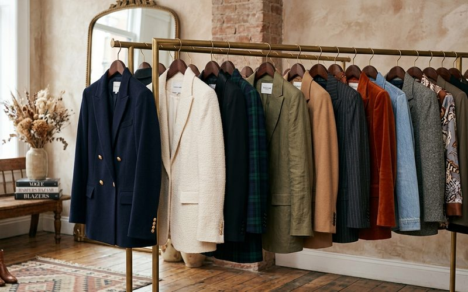

Se existe uma única peça capaz de elevar instantaneamente qualquer look, essa peça é o blazer. Não há combinação que o blazer não melhore: ele faz o jeans parecer intencional, o vestido parecer poderoso, o moletom parecer editorial. É a peça que qualifica tudo o que está embaixo, e que em brechós frequentemente aparece em versões que o mercado atual não consegue mais produzir com a mesma integridade de construção.
A razão é simples: blazers de qualidade exigem entretela de tecido (não de cola), costuras precisas, forro de qualidade e muito trabalho manual. Esse padrão de construção era comum em peças de alfaiataria até os anos 2000. Hoje, ele existe nas grifes de luxo, ou nos brechós de curadoria, onde esses blazers chegam com décadas de vida útil ainda pela frente.
O primeiro teste é segurar o blazer pelos ombros e observar se ele cai com equilíbrio. Um blazer bem construído mantém a forma mesmo sem ser vestido. Depois, aperte levemente o lapelo: ele deve recuperar a forma imediatamente, sem deixar marcas. Verifique a costura dos ombros, ela deve ser firme, sem ondulações. Por fim, abra o forro e observe o acabamento interno: costuras bem feitas por dentro são sinal de uma peça construída para durar.
O blazer oversized dos anos 90, largo, com ombros marcados, voltou com força e combina perfeitamente com calça skinny ou shorts de alfaiataria. O blazer de cintura marcada dos anos 2000, mais justo e com botões na altura do umbigo, é ideal sobre vestidos fluidos ou saias midi. O blazer clássico de corte reto, atemporal por excelência, funciona para o trabalho, para viagens e para eventos. Cada silhueta conta uma história diferente, e o brechó costuma ter as três ao mesmo tempo.
O blazer com jeans e tênis é a combinação que define o estilo casual sofisticado. O blazer com vestido de alças e sandália de salto é a fórmula certa para eventos que pedem elegância sem cerimônia excessiva. O blazer com saia midi e ankle boot é a equação do outono/inverno belo-horizontino. E o blazer sobre um body preto e calça de alfaiataria? É autoridade vestida de elegância.
No Brechó Outra Vez, os blazers são uma das categorias mais procuradas, e mais recompensadoras. Cada peça que chega passa pelo critério rigoroso de construção e estado. Quando você encontra aquele blazer que parece ter sido feito para o seu corpo, você entende por que o garimpo é, muitas vezes, mais satisfatório do que qualquer compra convencional. É a sensação de ter descoberto algo que esperava por você.